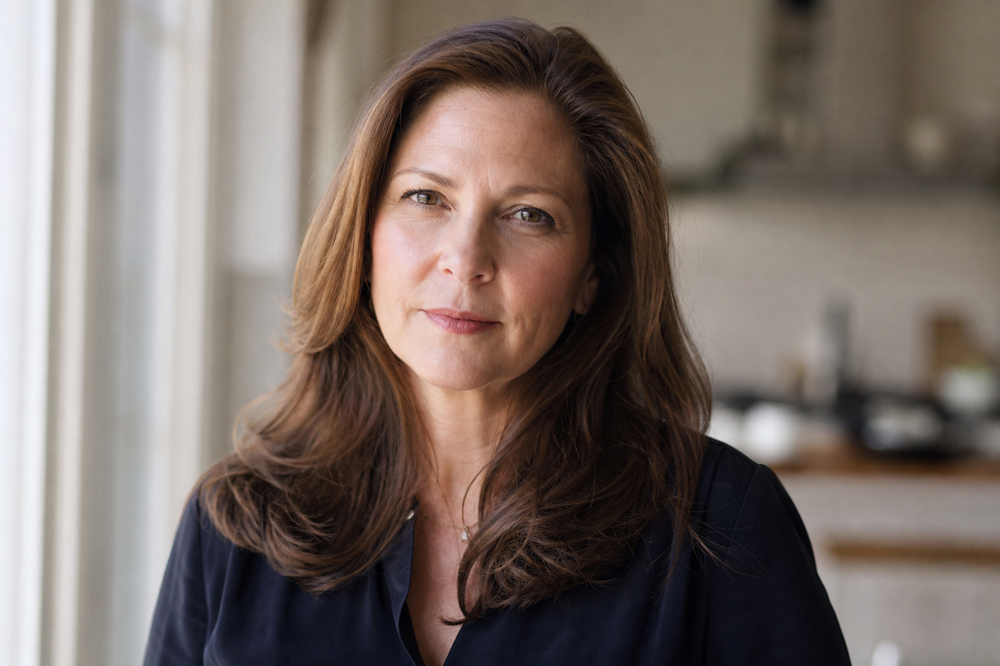
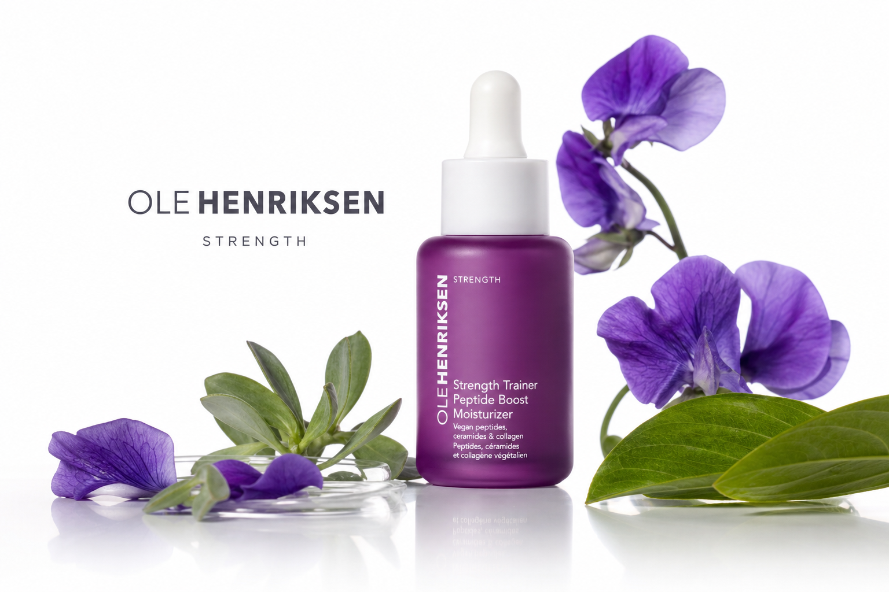
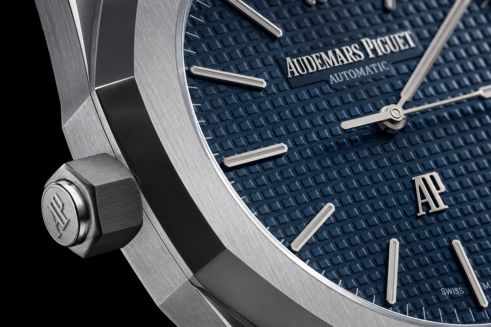
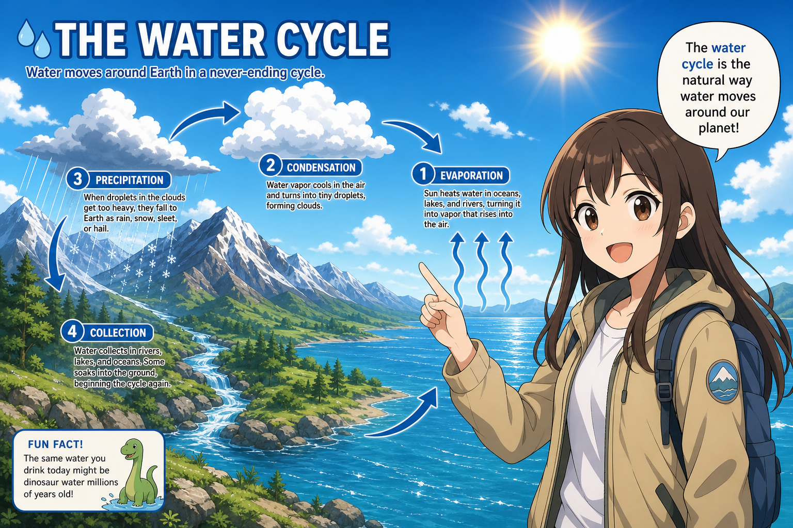
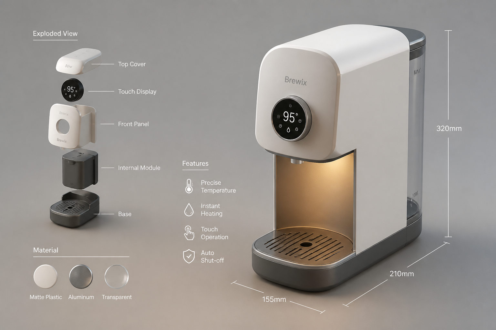
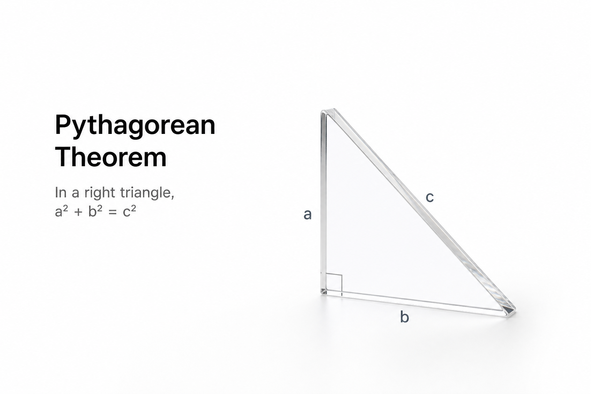

PHOTOREALISTICواقعي فوتوغرافي
صورة تبدو كأنها مُصوَّرة بكاميرا حقيقية. الأكثر استخداماً للمحتوى الاحترافي.
مثال في البرومبت:
STYLE
الستايل يُحدد هوية الصورة البصرية — واقعي، سينمائي، فني، أو تجاري. بدون تحديد الستايل، النتيجة تكون عامة ومش مميزة.
Style = الأسلوب البصري + تقنية التصوير + إحساس الصورة النهائيليه مهم؟ نفس المشهد بنفس الإضاءة — photorealistic يُنتج صورة واقعية، وanime style يُنتج رسوماً يابانية. الستايل هو اللي يفرّق صورتك عن غيرها. جرّب التمرين ↓

صورة تبدو كأنها مُصوَّرة بكاميرا حقيقية. الأكثر استخداماً للمحتوى الاحترافي.
مثال في البرومبت:

أسلوب نظيف واحترافي زي إعلانات الماركات الكبيرة. إضاءة محسوبة وخلفية منظمة.
مثال في البرومبت:


واقعية فوق الطبيعي — كل تفصيلة واضحة: ملمس، انعكاس، وظل. مثالي مع كلمات التوابل.
مثال في البرومبت:

أسلوب الرسوم اليابانية — خطوط واضحة، ألوان زاهية، وتعبيرات مبالَغ فيها.
مثال في البرومبت:
إحساس لوحة فنية مرسومة بالزيت — ضربات فرشاة، ألوان غنية، وملمس فني.
مثال في البرومبت:

مظهر مُصمَّم رقمياً بتقنية 3D — أسطح ناعمة، إضاءة محسوبة، ومظهر عصري.
مثال في البرومبت:

بساطة ونظافة — عناصر قليلة، مساحات فارغة، وألوان هادئة. أقل هو أكثر.
مثال في البرومبت:
٤ صور بس — اختار الستايل. اضغط واعرف النتيجة فوراً.
١ / ٤
الستايل ده…